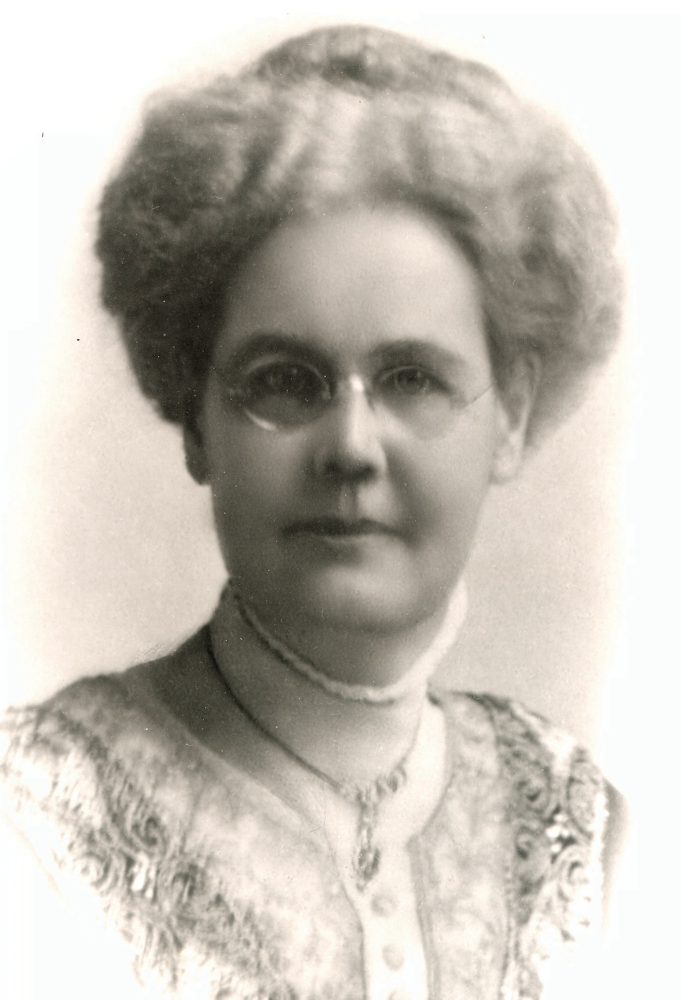
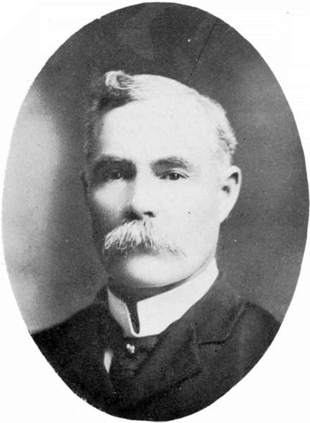

-1-MasterItem.svg)
Stories of Westminster United Church & its People / Page
16
Table
of Contents
HELEN RICHMOND BROUGH MITCHELL, COMMUNITY ACTIVIST
Born to William and Elizabeth R. Brough in 1854 at Gananoque, Leeds County,
Ontario, Helen was educated at the Gananoque High School. At 24, she married
James Bertram Mitchell, and they moved together to Manitoba. They had three
children: Ross, Edith Helen, and Elinor. She was a charter member and served on
the first executive of the Winnipeg Women’s Canadian Club. She was also Past
President of the Westminster Church Ladies’ Society, and a member of the board of
the Old Folks’ Home. Although her life was filled with accomplishments, she died
prematurely, before she was 60, in her own home in 1912.

The Women’s Canadian Club of Winnipeg (WCCW) was formed in 1907. It was the outcome of a
galvanizing lecture delivered by
the most venerated English poet of Empire, Rudyard Kipling, at the Men’s Canadian Club of Winnipeg. (We surmise that the event was
also attended by many of the members’ wives.) The early spirit of Women’s Canadian Club of Winnipeg bore the imprint of Kipling’s
imperialist influence: the mandate of its predominantly Anglo-Saxon membership
was to promote national identity and unity.
It encouraged interest among women in history, fostered patriotism and the study
of contemporary issues, promoted the
preservation of heritage, and partook in charitable activities such as war
relief.
JAMES BERTRAM MITCHELL, SOLDIER AND ARCHITECT
James is yet another of Westminster’s founders whose origins lay east of Manitoba.
Born in Gananoque, Ontario in 1852, James’ primary professional education was
at the Montreal Art School. However formative this experience may have been in
developing his design sensibilities, there is no evidence he took any specific
training
in the field of architecture. All the same, he drew the plans of 50 schools for
the
Winnipeg School Board, and oversaw the work of three other school designers
— but not before a period of adventure. In seeming tension with his artistic
leanings, James showed
an early interest in the military, with which he would be affiliated for much of
his remarkable life.

Our Founders